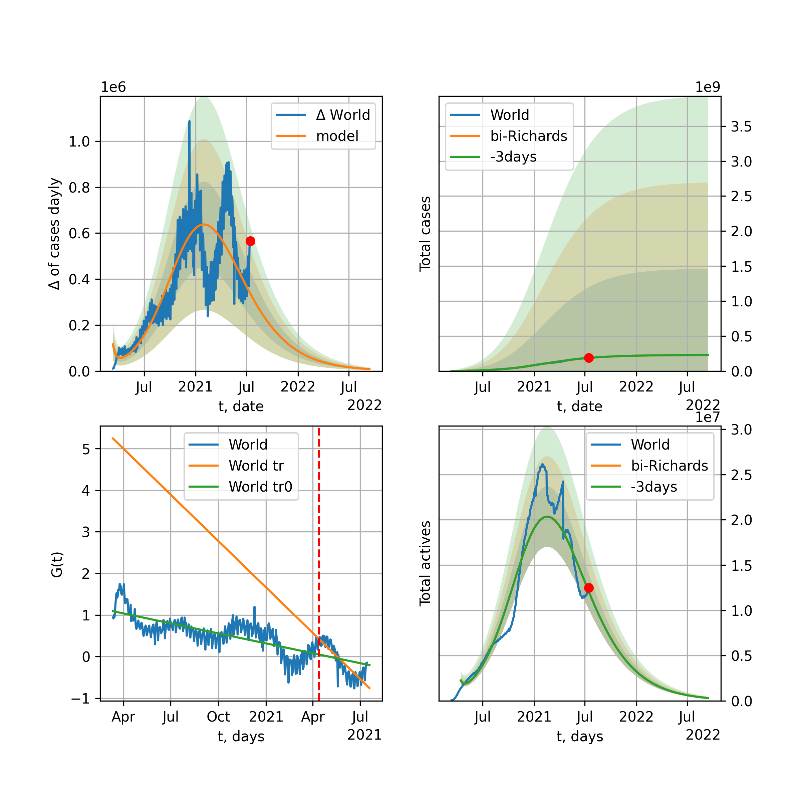
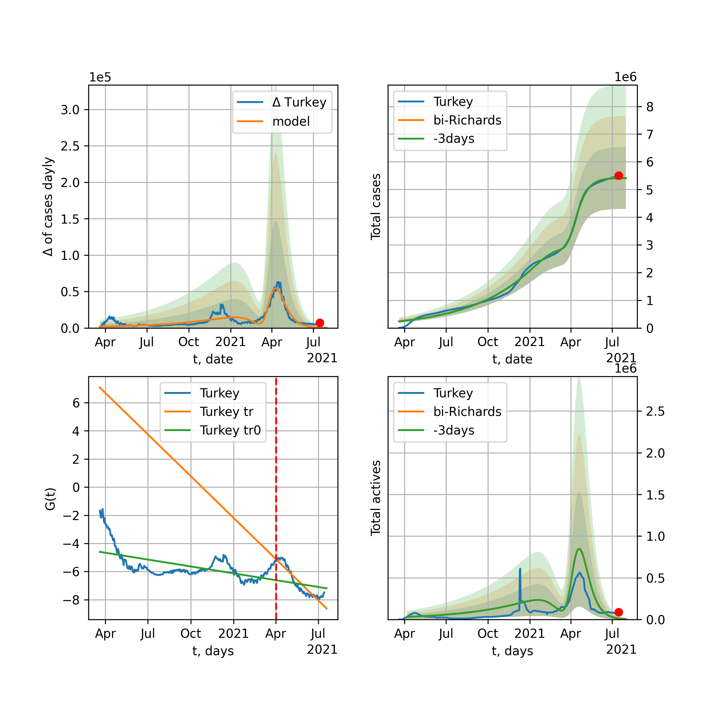
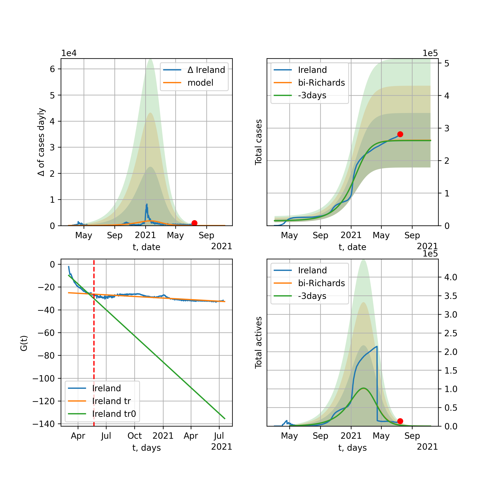

Multi-logistic model of COVID-19 dynamics
Model, code, results
Project maintained by algmaknick Hosted on GitHub Pages — Theme by mattgraham
World

World data at: 2020-07-11
+3 day model MAPE: 0.008077
model: bi-Richards
coeffs: [ 2.50052741e+07 1.08245710e+00 -6.50362687e+01 1.95170766e-02]
S.Korea scenario coeffs: [0.36242246, 2.56241634, 1.84890887, 0.13324732]
rational stdev: 0.076326
forecast at the end of period: +975 days
deltaDaycases: 3883
total cases: 38616367 ± 2947422
total death: 1705416 ± 390501
bi-Richards approximation splitting point: 50
trend coefficient of determination: 0.843822
intercept: -2.348187
slope: -0.033700
trend coefficient of determination: 0.333911
intercept: -3.966586
slope: -0.003963
European Union

European Union data at: 2020-07-11
+3 day model MAPE: 0.002658
model: bi-Richards
coeffs: [ 3.98909848e+05 2.87094748e+00 -7.67371138e+01 9.24390578e-03]
rational stdev: 0.545792
forecast at the end of period: +119 days
deltaDaycases: 222
total cases: 1472909 ± 803901
total death: 148722 ± 243513
bi-Richards approximation splitting point: 83
trend coefficient of determination: 0.943427
intercept: -1.113004
slope: -0.057411
trend coefficient of determination: 0.007877
intercept: -5.698390
slope: -0.001736
Brazil

Brazil data at: 2020-07-11
+3 day model MAPE: 0.003470
model: Richards
coeffs: [ 5.59243518e+06 3.86736489e-01 -1.70832322e+01 5.04438000e-02]
S.Korea scenario coeffs: [0.36242246, 2.56241634, 1.84890887, 0.13324732]
rational stdev: 0.352833
forecast at the end of period: +875 days
deltaDaycases: 1748
total cases: 7336635 ± 2588607
total death: 284934 ± 301602
trend coefficient of determination: 0.222597
intercept: -2.436432
slope: -0.014627
Russia

Russia data at: 2020-07-11
+3 day model MAPE: 0.008381
model: Richards
coeffs: [ 8.67386073e+05 2.29696136e+00 -7.71865164e+01 1.40184214e-02]
S.Korea scenario coeffs: [0.36242246, 2.56241634, 1.84890887, 0.13324732]
rational stdev: 0.210781
forecast at the end of period: +525 days
deltaDaycases: 340
total cases: 1149160 ± 242221
total death: 17913 ± 11327
trend coefficient of determination: 0.971338
intercept: -1.591398
slope: -0.031620
USA

USA data at: 2020-07-11
+3 day model MAPE: 0.003190
model: bi-Richards
coeffs: [ 1.27515778e+07 7.36405792e-01 -3.42864746e+00 2.96923081e-02]
rational stdev: 0.273544
forecast at the end of period: +329 days
deltaDaycases: 500
total cases: 14844391 ± 4060601
total death: 607806 ± 498785
bi-Richards approximation splitting point: 90
trend coefficient of determination: 0.944881
intercept: -1.507421
slope: -0.043831
trend coefficient of determination: 0.811980
intercept: -7.047946
slope: 0.021965
Spain

Spain data at: 2020-07-10
+3 day model MAPE: 0.004895
model: bi-Richards
coeffs: [ 2.08230642e+04 2.44041467e+00 -6.82262223e+01 1.00688475e-02]
rational stdev: 0.197873
forecast at the end of period: +22 days
deltaDaycases: 162
total cases: 303377 ± 60030
total death: 28628 ± 16994
bi-Richards approximation splitting point: 90
trend coefficient of determination: 0.953843
intercept: -0.737153
slope: -0.060967
trend coefficient of determination: 0.001929
intercept: -6.972343
slope: 0.001330
Italy

Italy data at: 2020-07-11
+3 day model MAPE: 0.001087
model: Richards
coeffs: [ 2.39724492e+05 7.61209437e+00 -5.88231054e+01 7.54106145e-03]
rational stdev: 0.100534
forecast at the end of period: +7 days
deltaDaycases: 23
total cases: 239330 ± 24060
total death: 34441 ± 10387
trend coefficient of determination: 0.961242
intercept: -1.395474
slope: -0.048839
United Kingdom

United Kingdom data at: 2020-07-11
+3 day model MAPE: 0.001602
model: Richards
coeffs: [ 2.92991197e+05 4.27519000e+00 -6.86145125e+01 1.04041807e-02]
S.Korea scenario coeffs: [0.36242246, 2.56241634, 1.84890887, 0.13324732]
rational stdev: 0.160594
forecast at the end of period: +315 days
deltaDaycases: 210
total cases: 384306 ± 61717
total death: 59581 ± 28705
trend coefficient of determination: 0.976817
intercept: -1.483908
slope: -0.042321
France

France data at: 2020-07-10
+3 day model MAPE: 0.004048
model: bi-Richards
coeffs: [ 4.17627378e+04 3.42805001e+00 -3.21745375e+01 1.05440700e-02]
rational stdev: 0.091480
forecast at the end of period: +78 days
deltaDaycases: 30
total cases: 180466 ± 16509
total death: 31710 ± 8702
bi-Richards approximation splitting point: 86
trend coefficient of determination: 0.904055
intercept: -0.837118
slope: -0.068811
trend coefficient of determination: 0.004226
intercept: -6.266665
slope: 0.002784
Germany

Germany data at: 2020-07-11
+3 day model MAPE: 0.000804
model: bi-Richards
coeffs: [ 3.06246079e+04 4.99176031e+00 -3.33715860e+01 7.66346804e-03]
rational stdev: 0.125201
forecast at the end of period: +21 days
deltaDaycases: 178
total cases: 204721 ± 25631
total death: 9358 ± 3514
bi-Richards approximation splitting point: 94
trend coefficient of determination: 0.950727
intercept: -1.435796
slope: -0.061174
trend coefficient of determination: 0.003351
intercept: -6.008618
slope: -0.002903
Turkey

Turkey data at: 2020-07-11
+3 day model MAPE: 0.001746
model: bi-Richards
coeffs: [ 8.68855867e+04 2.15870059e+00 -3.06376312e+00 1.82250547e-02]
rational stdev: 0.189473
forecast at the end of period: +91 days
deltaDaycases: 50
total cases: 246852 ± 46771
total death: 6223 ± 3537
bi-Richards approximation splitting point: 75
trend coefficient of determination: 0.786488
intercept: -1.016836
slope: -0.058939
trend coefficient of determination: 0.017182
intercept: -5.153559
slope: -0.001576
Iran

Iran data at: 2020-07-11
+3 day model MAPE: 0.007511
model: bi-Richards
coeffs: [ 2.12424389e+05 2.89683278e+00 -2.14931372e+01 1.20409633e-02]
S.Korea scenario coeffs: [0.36242246, 2.56241634, 1.84890887, 0.13324732]
rational stdev: 0.253305
forecast at the end of period: +539 days
deltaDaycases: 102
total cases: 382723 ± 96945
total death: 18954 ± 14403
bi-Richards approximation splitting point: 75
trend coefficient of determination: 0.949245
intercept: -0.918258
slope: -0.055194
trend coefficient of determination: 0.558619
intercept: -3.575616
slope: -0.008008
Canada

Canada data at: 2020-07-11
+3 day model MAPE: 0.005000
model: bi-Richards
coeffs: [ 3.82388187e+03 1.22100092e+01 -2.78494346e+01 4.01373519e-03]
rational stdev: 0.191701
forecast at the end of period: +126 days
deltaDaycases: 0
total cases: 110065 ± 21099
total death: 8995 ± 5173
bi-Richards approximation splitting point: 95
trend coefficient of determination: 0.909276
intercept: -1.312132
slope: -0.037888
trend coefficient of determination: 0.372508
intercept: -2.823393
slope: -0.025872
South Africa

South Africa data at: 2020-07-11
+3 day model MAPE: 0.013263
model: bi-Richards
coeffs: [3.47258018e+07 7.02396378e-02 1.65298271e+02 2.29489965e-01]
rational stdev: 0.294920
forecast at the end of period: +413 days
deltaDaycases: 6462
total cases: 34326659 ± 10123622
total death: 515970 ± 456509
bi-Richards approximation splitting point: 30
trend coefficient of determination: 0.609636
intercept: -1.332919
slope: -0.127650
trend coefficient of determination: 0.591094
intercept: -4.410064
slope: -0.011254
Belgium

Belgium data at: 2020-07-11
+3 day model MAPE: 0.002310
model: bi-Richards
coeffs: [ 4.54808772e+03 7.47146528e+00 -1.91415416e+00 6.35677843e-03]
rational stdev: 0.541609
forecast at the end of period: +70 days
deltaDaycases: 4
total cases: 64264 ± 34806
total death: 10041 ± 16314
bi-Richards approximation splitting point: 105
trend coefficient of determination: 0.958120
intercept: -1.263338
slope: -0.055276
trend coefficient of determination: 0.188223
intercept: -20.473696
slope: 0.116343
Peru

Peru data at: 2020-07-11
+3 day model MAPE: 0.012538
model: bi-Richards
coeffs: [ 1.12905399e+05 6.36242641e+00 -5.96045892e+00 8.04751562e-03]
S.Korea scenario coeffs: [0.36242246, 2.56241634, 1.84890887, 0.13324732]
rational stdev: 0.167790
forecast at the end of period: +455 days
deltaDaycases: 23
total cases: 406311 ± 68174
total death: 14708 ± 7403
bi-Richards approximation splitting point: 70
trend coefficient of determination: 0.545731
intercept: -1.444711
slope: -0.026960
trend coefficient of determination: 0.847218
intercept: -1.106197
slope: -0.029904
Netherlands

Netherlands data at: 2020-07-11
+3 day model MAPE: 0.001112
model: bi-Richards
coeffs: [4.79593030e+03 7.26716837e+00 2.68259359e+01 1.09981438e-02]
rational stdev: 0.030828
forecast at the end of period: +7 days
deltaDaycases: 16
total cases: 50916 ± 1569
total death: 6136 ± 567
bi-Richards approximation splitting point: 75
trend coefficient of determination: 0.960500
intercept: -1.296794
slope: -0.062503
trend coefficient of determination: 0.279057
intercept: -1.137901
slope: -0.054175
India

India data at: 2020-07-11
+3 day model MAPE: 0.010557
model: Richards
coeffs: [ 1.56408724e+07 2.57174400e-01 -5.93346885e+01 4.25999183e-02]
rational stdev: 0.377602
forecast at the end of period: +595 days
deltaDaycases: 788
total cases: 15569131 ± 5878936
total death: 415098 ± 470225
trend coefficient of determination: 0.727702
intercept: -1.965348
slope: -0.017789
Switzerland

Switzerland data at: 2020-07-11
+3 day model MAPE: 0.003525
model: bi-Richards
coeffs: [1.13086661e+06 9.87322837e-02 1.47052022e+02 1.45586453e-01]
rational stdev: 0.293538
forecast at the end of period: +525 days
deltaDaycases: 88
total cases: 1155467 ± 339173
total death: 69292 ± 61019
bi-Richards approximation splitting point: 96
trend coefficient of determination: 0.953575
intercept: -2.395961
slope: -0.082368
trend coefficient of determination: 0.588626
intercept: -15.030096
slope: 0.062819
Ecuador

Ecuador data at: 2020-07-11
+3 day model MAPE: 0.020944
model: Richards
coeffs: [ 8.30786403e+04 1.46966126e+00 -1.38383479e+02 1.51538117e-02]
S.Korea scenario coeffs: [0.36242246, 2.56241634, 1.84890887, 0.13324732]
rational stdev: 0.176022
forecast at the end of period: +595 days
deltaDaycases: 56
total cases: 104399 ± 18376
total death: 7814 ± 4126
trend coefficient of determination: 0.144830
intercept: -2.997837
slope: -0.026205
Portugal

Portugal data at: 2020-07-11
+3 day model MAPE: 0.003947
model: bi-Richards
coeffs: [ 3.32156832e+04 1.83136491e+00 -5.28123345e+01 1.52728922e-02]
rational stdev: 0.049748
forecast at the end of period: +175 days
deltaDaycases: 4
total cases: 61220 ± 3045
total death: 2190 ± 326
bi-Richards approximation splitting point: 61
trend coefficient of determination: 0.904014
intercept: -1.180214
slope: -0.070096
trend coefficient of determination: 0.008293
intercept: -5.070412
slope: 0.001147
Saudi Arabia

Saudi Arabia data at: 2020-07-11
+3 day model MAPE: 0.009298
model: bi-Richards
coeffs: [1.43679026e+05 1.55860479e-01 8.58748014e+01 4.94672787e-01]
rational stdev: 0.164883
forecast at the end of period: +84 days
deltaDaycases: 17
total cases: 275172 ± 45371
total death: 2615 ± 1293
bi-Richards approximation splitting point: 75
trend coefficient of determination: 0.952055
intercept: -4.831650
slope: -0.062016
trend coefficient of determination: 0.740737
intercept: -7.077703
slope: -0.026900
Sweden

Sweden data at: 2020-07-10
+3 day model MAPE: 0.010976
model: bi-Richards
coeffs: [3.64134078e+04 4.03889108e-01 8.07938206e+01 1.64312718e-01]
rational stdev: 0.231469
forecast at the end of period: +71 days
deltaDaycases: 19
total cases: 87456 ± 20243
total death: 6452 ± 4480
bi-Richards approximation splitting point: 90
trend coefficient of determination: 0.878218
intercept: -2.061174
slope: -0.049387
trend coefficient of determination: 0.149780
intercept: -0.528386
slope: -0.052234
Pakistan

Pakistan data at: 2020-07-11
+3 day model MAPE: 0.014493
model: bi-Richards
coeffs: [2.62889051e+05 5.47371331e-02 1.07750999e+02 1.82294017e+00]
S.Korea scenario coeffs: [0.36242246, 2.56241634, 1.84890887, 0.13324732]
rational stdev: 0.375184
forecast at the end of period: +210 days
deltaDaycases: 118
total cases: 356297 ± 133677
total death: 7440 ± 8374
bi-Richards approximation splitting point: 25
trend coefficient of determination: 0.864106
intercept: -3.527798
slope: -0.412968
trend coefficient of determination: 0.974721
intercept: -13.597172
slope: -0.106671
Ireland

Ireland data at: 2020-07-11
+3 day model MAPE: 0.000730
model: Richards
coeffs: [2.53612093e+04 2.16098361e-01 2.04754823e+01 4.28782799e-01]
rational stdev: 0.154226
forecast at the end of period: +77 days
deltaDaycases: 0
total cases: 25361 ± 3911
total death: 1728 ± 799
trend coefficient of determination: 0.941518
intercept: -3.813785
slope: -0.079747
Mexico

Mexico data at: 2020-07-11
+3 day model MAPE: 0.006835
model: Richards
coeffs: [ 1.01796751e+06 5.25701465e-01 -8.57946433e+01 3.16801061e-02]
S.Korea scenario coeffs: [0.36242246, 2.56241634, 1.84890887, 0.13324732]
rational stdev: 0.207445
forecast at the end of period: +1085 days
deltaDaycases: 206
total cases: 1348670 ± 279775
total death: 158633 ± 98723
trend coefficient of determination: 0.913729
intercept: -2.093125
slope: -0.020474
Singapore

Singapore data at: 2020-07-11
+3 day model MAPE: 0.002591
model: bi-Richards
coeffs: [ 3.92836536e+04 5.34709182e+00 -3.30753951e+01 7.11568571e-03]
rational stdev: 0.253915
forecast at the end of period: +105 days
deltaDaycases: 2
total cases: 48527 ± 12321
total death: 27 ± 20
bi-Richards approximation splitting point: 60
trend coefficient of determination: 0.124800
intercept: -2.317178
slope: -0.021565
trend coefficient of determination: 0.640330
intercept: 0.428604
slope: -0.038973
Chile

Chile data at: 2020-07-11
+3 day model MAPE: 0.006792
model: Richards
coeffs: [3.31611458e+05 6.53162792e-02 5.64830951e+01 1.26332124e+00]
S.Korea scenario coeffs: [0.36242246, 2.56241634, 1.84890887, 0.13324732]
rational stdev: 0.127734
forecast at the end of period: +147 days
deltaDaycases: 463
total cases: 433914 ± 55425
total death: 9568 ± 3666
trend coefficient of determination: 0.984914
intercept: -14.061255
slope: -0.074111
Israel

Israel data at: 2020-07-11
+3 day model MAPE: 0.006898
model: bi-Richards
coeffs: [1.34046781e+06 1.77591556e-01 9.95136104e+01 1.33552381e-01]
rational stdev: 0.121103
forecast at the end of period: +315 days
deltaDaycases: 101
total cases: 1353277 ± 163885
total death: 12678 ± 4606
bi-Richards approximation splitting point: 70
trend coefficient of determination: 0.943903
intercept: -1.872005
slope: -0.098551
trend coefficient of determination: 0.759378
intercept: -12.266268
slope: 0.067157
Austria

Austria data at: 2020-07-11
+3 day model MAPE: 0.013071
model: bi-Richards
coeffs: [ 5.70158591e+03 3.65122549e+00 -1.06947934e+02 6.56248657e-03]
rational stdev: 1.152832
forecast at the end of period: +77 days
deltaDaycases: 14
total cases: 20818 ± 24000
total death: 777 ± 2687
bi-Richards approximation splitting point: 83
trend coefficient of determination: 0.868023
intercept: -1.574096
slope: -0.070821
trend coefficient of determination: 0.510464
intercept: -11.604849
slope: 0.052707
Belarus

Belarus data at: 2020-07-11
+3 day model MAPE: 0.003896
model: Richards
coeffs: [ 7.39400496e+04 2.08916489e+00 -7.10662377e+01 1.78781593e-02]
S.Korea scenario coeffs: [0.36242246, 2.56241634, 1.84890887, 0.13324732]
rational stdev: 0.151367
forecast at the end of period: +455 days
deltaDaycases: 22
total cases: 98887 ± 14968
total death: 700 ± 317
trend coefficient of determination: 0.968921
intercept: -1.685609
slope: -0.040947
Japan

Japan data at: 2020-07-11
+3 day model MAPE: 0.027654
model: bi-Richards
coeffs: [5.38145242e+05 4.95176458e-02 2.58832575e+02 2.99171317e+00]
rational stdev: 0.538436
forecast at the end of period: +525 days
deltaDaycases: 0
total cases: 554249 ± 298427
total death: 25759 ± 41608
bi-Richards approximation splitting point: 115
trend coefficient of determination: 0.931067
intercept: -10.237458
slope: -0.231216
trend coefficient of determination: 0.493296
intercept: -38.170162
slope: 0.023014
China

China data at: 2020-07-11
+3 day model MAPE: 0.000487
model: bi-Richards
coeffs: [ 1.49723608e+03 2.65602304e+01 -5.59701422e-03 2.86246312e-03]
rational stdev: 0.093264
forecast at the end of period: +7 days
deltaDaycases: 0
total cases: 83269 ± 7766
total death: 4616 ± 1291
bi-Richards approximation splitting point: 110
trend coefficient of determination: 0.821001
intercept: -1.982070
slope: -0.082683
trend coefficient of determination: 0.098776
intercept: -12.834923
slope: 0.023212
Qatar

Qatar data at: 2020-07-11
+3 day model MAPE: 0.000592
model: Richards
coeffs: [1.11787645e+05 8.58399648e-02 4.79816196e+01 6.60068572e-01]
S.Korea scenario coeffs: [0.36242246, 2.56241634, 1.84890887, 0.13324732]
rational stdev: 0.129534
forecast at the end of period: +329 days
deltaDaycases: 12
total cases: 151657 ± 19644
total death: 214 ± 83
trend coefficient of determination: 0.975076
intercept: -6.904885
slope: -0.058030
Poland

Poland data at: 2020-07-11
+3 day model MAPE: 0.004528
model: bi-Richards
coeffs: [ 2.50266319e+04 3.03117617e+00 -2.38828587e+01 1.27663190e-02]
rational stdev: 0.109028
forecast at the end of period: +105 days
deltaDaycases: 4
total cases: 43744 ± 4769
total death: 1813 ± 593
bi-Richards approximation splitting point: 60
trend coefficient of determination: 0.712841
intercept: -1.168487
slope: -0.047574
trend coefficient of determination: 0.714134
intercept: -2.785647
slope: -0.017577
UAE

UAE data at: 2020-07-11
+3 day model MAPE: 0.017350
model: bi-Richards
coeffs: [ 2.79154346e+04 5.03977405e+00 -4.66507150e+01 8.76618906e-03]
rational stdev: 0.050424
forecast at the end of period: +105 days
deltaDaycases: 2
total cases: 58075 ± 2928
total death: 353 ± 53
bi-Richards approximation splitting point: 80
trend coefficient of determination: 0.914128
intercept: -1.954813
slope: -0.032648
trend coefficient of determination: 0.100341
intercept: -5.374090
slope: 0.006346
Romania

Romania data at: 2020-07-11
+3 day model MAPE: 0.010331
model: bi-Richards
coeffs: [3.90555080e+04 1.08061907e+00 1.99044262e+01 2.99602509e-02]
rational stdev: 0.146196
forecast at the end of period: +119 days
deltaDaycases: 34
total cases: 59289 ± 8667
total death: 3458 ± 1516
bi-Richards approximation splitting point: 87
trend coefficient of determination: 0.927965
intercept: -1.375969
slope: -0.046065
trend coefficient of determination: 0.427089
intercept: -6.636239
slope: 0.017658
Panama

Panama data at: 2020-07-11
+3 day model MAPE: 0.009811
model: bi-Richards
coeffs: [ 7.08537640e+04 1.84517935e+00 -1.49560509e+00 1.92199203e-02]
rational stdev: 0.206397
forecast at the end of period: +105 days
deltaDaycases: 50
total cases: 82920 ± 17114
total death: 1670 ± 1034
bi-Richards approximation splitting point: 70
trend coefficient of determination: 0.874596
intercept: -1.306395
slope: -0.048646
trend coefficient of determination: 0.008998
intercept: -3.953576
slope: 0.001599
Ukraine

Ukraine data at: 2020-07-11
+3 day model MAPE: 0.001789
model: bi-Richards
coeffs: [4.35609488e+04 2.22243883e-01 7.54884437e+01 2.61795314e-01]
rational stdev: 0.155724
forecast at the end of period: +105 days
deltaDaycases: 3
total cases: 70823 ± 11028
total death: 1830 ± 854
bi-Richards approximation splitting point: 65
trend coefficient of determination: 0.818603
intercept: -2.447746
slope: -0.067459
trend coefficient of determination: 0.176603
intercept: -6.094734
slope: -0.006416
Indonesia

Indonesia data at: 2020-07-11
+3 day model MAPE: 0.019964
model: bi-Richards
coeffs: [ 1.79863133e+05 1.08191032e+00 -2.39161820e+01 2.27665558e-02]
rational stdev: 0.144235
forecast at the end of period: +203 days
deltaDaycases: 49
total cases: 224979 ± 32449
total death: 10717 ± 4637
bi-Richards approximation splitting point: 75
trend coefficient of determination: 0.800912
intercept: -2.031024
slope: -0.029241
trend coefficient of determination: 0.003678
intercept: -3.839884
slope: -0.001180
Bangladesh

Bangladesh data at: 2020-07-11
+3 day model MAPE: 0.010502
model: bi-Richards
coeffs: [3.10987334e+05 8.89466372e-02 8.20832463e+01 4.36273098e-01]
S.Korea scenario coeffs: [0.36242246, 2.56241634, 1.84890887, 0.13324732]
rational stdev: 0.415297
forecast at the end of period: +763 days
deltaDaycases: 1
total cases: 423686 ± 175955
total death: 5421 ± 6753
bi-Richards approximation splitting point: 29
trend coefficient of determination: 0.000165
intercept: -4.776734
slope: -0.003454
trend coefficient of determination: 0.912091
intercept: -3.464715
slope: -0.049926
South_Korea

South Korea data at: 2020-07-11
+3 day model MAPE: 0.000195
model: bi-Richards
coeffs: [ 7.83728850e+03 1.46396516e+00 -1.17959015e+02 1.19444908e-02]
rational stdev: 0.148715
forecast at the end of period: +105 days
deltaDaycases: 18
total cases: 17147 ± 2550
total death: 369 ± 164
bi-Richards approximation splitting point: 73
trend coefficient of determination: 0.865979
intercept: -1.364385
slope: -0.089620
trend coefficient of determination: 0.407816
intercept: -8.346748
slope: 0.020966
Moldova

Moldova data at: 2020-07-11
+3 day model MAPE: 0.007025
model: bi-Richards
coeffs: [1.53389590e+04 1.00891763e-01 9.17173569e+01 7.33955424e-01]
rational stdev: 0.165138
forecast at the end of period: +63 days
deltaDaycases: 2
total cases: 21614 ± 3569
total death: 721 ± 357
bi-Richards approximation splitting point: 60
trend coefficient of determination: 0.918998
intercept: -3.163238
slope: -0.128471
trend coefficient of determination: 0.616074
intercept: -8.202455
slope: -0.026807
Denmark

Denmark data at: 2020-07-10
+3 day model MAPE: 0.000612
model: bi-Richards
coeffs: [7.87966915e+02 1.65265707e-01 1.00386314e+02 8.20729894e-01]
rational stdev: 0.242728
forecast at the end of period: +57 days
deltaDaycases: 0
total cases: 13050 ± 3167
total death: 613 ± 446
bi-Richards approximation splitting point: 100
trend coefficient of determination: 0.866594
intercept: -6.303670
slope: -0.085944
trend coefficient of determination: 0.046610
intercept: -8.709755
slope: -0.052551
Serbia

Serbia data at: 2020-07-11
+3 day model MAPE: 0.015144
model: bi-Richards
coeffs: [5.62115114e+04 2.64938764e-01 6.94254219e+01 1.24832547e-01]
rational stdev: 0.267210
forecast at the end of period: +231 days
deltaDaycases: 2
total cases: 67807 ± 18118
total death: 1433 ± 1148
bi-Richards approximation splitting point: 90
trend coefficient of determination: 0.855290
intercept: -2.594226
slope: -0.054423
trend coefficient of determination: 0.678261
intercept: -10.327984
slope: 0.048423
Kuwait

Kuwait data at: 2020-07-11
+3 day model MAPE: 0.017034
model: bi-Richards
coeffs: [ 4.28406727e+04 4.23639081e+00 -4.86168230e+00 1.11010781e-02]
S.Korea scenario coeffs: [0.36242246, 2.56241634, 1.84890887, 0.13324732]
rational stdev: 0.095909
forecast at the end of period: +364 days
deltaDaycases: 51
total cases: 77111 ± 7395
total death: 550 ± 158
bi-Richards approximation splitting point: 90
trend coefficient of determination: 0.171236
intercept: -2.541606
slope: -0.009868
trend coefficient of determination: 0.090971
intercept: -3.670834
slope: -0.006197
Philippines

Philippines data at: 2020-07-11
+3 day model MAPE: 0.029133
model: bi-Richards
coeffs: [ 5.41462952e+05 6.82339244e-01 -9.60451968e+01 2.04083298e-02]
rational stdev: 0.176823
forecast at the end of period: +385 days
deltaDaycases: 92
total cases: 546321 ± 96602
total death: 13823 ± 7332
bi-Richards approximation splitting point: 60
trend coefficient of determination: 0.659552
intercept: -1.533808
slope: -0.049459
trend coefficient of determination: 0.031512
intercept: -4.306563
slope: 0.003884
Norway

Norway data at: 2020-07-11
+3 day model MAPE: 0.000159
model: bi-Richards
coeffs: [7.03352083e+02 4.83661805e+00 2.22600696e+01 1.14308709e-02]
rational stdev: 0.155423
forecast at the end of period: +7 days
deltaDaycases: 5
total cases: 9028 ± 1403
total death: 253 ± 117
bi-Richards approximation splitting point: 105
trend coefficient of determination: 0.918512
intercept: -1.143928
slope: -0.061772
trend coefficient of determination: 0.053941
intercept: -4.240089
slope: -0.022732
Czechia

Czechia data at: 2020-07-11
+3 day model MAPE: 0.005126
model: bi-Richards
coeffs: [ 4.68229532e+04 6.16659348e-01 -1.06798932e+02 2.13481576e-02]
rational stdev: 0.571285
forecast at the end of period: +385 days
deltaDaycases: 8
total cases: 54155 ± 30938
total death: 1453 ± 2490
bi-Richards approximation splitting point: 61
trend coefficient of determination: 0.433268
intercept: -1.504142
slope: -0.055754
trend coefficient of determination: 0.145984
intercept: -6.165055
slope: 0.009622
Colombia

Colombia data at: 2020-07-11
+3 day model MAPE: 0.009656
model: bi-Richards
coeffs: [ 1.84814228e+06 3.20255326e-01 -3.83125891e+01 4.33508430e-02]
S.Korea scenario coeffs: [0.36242246, 2.56241634, 1.84890887, 0.13324732]
rational stdev: 0.191805
forecast at the end of period: +1295 days
deltaDaycases: 421
total cases: 2427379 ± 465584
total death: 85481 ± 49187
bi-Richards approximation splitting point: 41
trend coefficient of determination: 0.765784
intercept: -1.128183
slope: -0.066208
trend coefficient of determination: 0.480955
intercept: -3.072480
slope: -0.006626
Australia

Australia data at: 2020-07-11
+3 day model MAPE: 0.069203
model: bi-Richards
coeffs: [ 9.98524327e+03 1.10985722e+00 -3.68108941e+02 8.49406805e-03]
rational stdev: 0.185225
forecast at the end of period: +210 days
deltaDaycases: 13
total cases: 13981 ± 2589
total death: 154 ± 85
bi-Richards approximation splitting point: 45
trend coefficient of determination: 0.835677
intercept: -0.933450
slope: -0.099720
trend coefficient of determination: 0.318524
intercept: -8.155328
slope: 0.024729
Malaysia

Malaysia data at: 2020-07-11
+3 day model MAPE: 0.000876
model: bi-Richards
coeffs: [2.11691972e+03 1.35547929e-01 8.12088811e+01 9.36918136e-01]
S.Korea scenario coeffs: [0.36242246, 2.56241634, 1.84890887, 0.13324732]
rational stdev: 0.131693
forecast at the end of period: +7 days
deltaDaycases: 0
total cases: 8671 ± 1141
total death: 121 ± 47
bi-Richards approximation splitting point: 70
trend coefficient of determination: 0.797028
intercept: -5.482612
slope: -0.128207
trend coefficient of determination: 0.587713
intercept: -8.797590
slope: -0.056426
Dominican Republic

Dominican Republic data at: 2020-07-11
+3 day model MAPE: 0.007399
model: bi-Richards
coeffs: [1.55700645e+05 4.72310829e-01 1.71808401e+01 5.25798812e-02]
rational stdev: 0.100786
forecast at the end of period: +175 days
deltaDaycases: 112
total cases: 180443 ± 18186
total death: 3683 ± 1113
bi-Richards approximation splitting point: 80
trend coefficient of determination: 0.747147
intercept: -2.479675
slope: -0.030106
trend coefficient of determination: 0.008562
intercept: -4.643573
slope: 0.003134
Egypt

Egypt data at: 2020-07-11
+3 day model MAPE: 0.001546
model: Richards
coeffs: [9.54255359e+04 5.39019124e-02 9.26989694e+01 1.38802532e+00]
S.Korea scenario coeffs: [0.36242246, 2.56241634, 1.84890887, 0.13324732]
rational stdev: 0.227202
forecast at the end of period: +175 days
deltaDaycases: 184
total cases: 121514 ± 27608
total death: 5643 ± 3846
trend coefficient of determination: 0.960824
intercept: -10.287338
slope: -0.088362
Finland

Finland data at: 2020-07-11
+3 day model MAPE: 0.000239
model: bi-Richards
coeffs: [-3.00071928e+02 9.81332512e+00 8.25756427e+00 7.06946203e-03]
rational stdev: 0.131382
forecast at the end of period: +21 days
deltaDaycases: 1
total cases: 7339 ± 964
total death: 331 ± 130
bi-Richards approximation splitting point: 86
trend coefficient of determination: 0.875095
intercept: -1.475179
slope: -0.048649
trend coefficient of determination: 0.095228
intercept: -3.926552
slope: -0.029301
Morocco

Morocco data at: 2020-07-11
+3 day model MAPE: 0.012490
model: bi-Richards
coeffs: [7.99372193e+03 9.18380409e+00 5.37567474e+01 1.11976020e-02]
rational stdev: 0.062750
forecast at the end of period: +21 days
deltaDaycases: 31
total cases: 17270 ± 1083
total death: 272 ± 51
bi-Richards approximation splitting point: 75
trend coefficient of determination: 0.860915
intercept: -1.451843
slope: -0.047799
trend coefficient of determination: 0.288510
intercept: -7.432366
slope: 0.030727
Argentina

Argentina data at: 2020-07-11
+3 day model MAPE: 0.000914
model: bi-Richards
coeffs: [1.11808102e+06 1.26487111e-01 7.11565321e+01 1.40223089e-01]
rational stdev: 0.158263
forecast at the end of period: +455 days
deltaDaycases: 18
total cases: 1119671 ± 177202
total death: 20783 ± 9867
bi-Richards approximation splitting point: 38
trend coefficient of determination: 0.135995
intercept: -1.850846
slope: -0.085320
trend coefficient of determination: 0.176129
intercept: -4.223996
slope: -0.004053
Algeria

Algeria data at: 2020-07-11
+3 day model MAPE: 0.291207
model: bi-Richards
coeffs: [6.08932663e+03 2.17409790e+01 7.54871386e+01 7.94815436e-03]
rational stdev: 0.177529
forecast at the end of period: +63 days
deltaDaycases: 23
total cases: 23775 ± 4220
total death: 1275 ± 679
bi-Richards approximation splitting point: 75
trend coefficient of determination: 0.668615
intercept: -2.119424
slope: -0.027550
trend coefficient of determination: 0.742273
intercept: -7.019635
slope: 0.028885
Luxembourg

Luxembourg data at: 2020-07-11
+3 day model MAPE: 0.017340
model: bi-Richards
coeffs: [6.40719320e+03 4.95577877e-02 1.56511124e+02 7.62998510e+00]
rational stdev: 0.133776
forecast at the end of period: +105 days
deltaDaycases: 0
total cases: 10244 ± 1370
total death: 232 ± 93
bi-Richards approximation splitting point: 65
trend coefficient of determination: 0.669907
intercept: -38.008244
slope: -0.647200
trend coefficient of determination: 0.146314
intercept: -71.768393
slope: 0.020727
Thailand

Thailand data at: 2020-07-11
+3 day model MAPE: 0.001515
model: bi-Richards
coeffs: [ 2.51582022e+02 6.57155597e+00 -5.65500192e+01 6.22352287e-03]
rational stdev: 0.067621
forecast at the end of period: +21 days
deltaDaycases: 0
total cases: 3227 ± 218
total death: 58 ± 11
bi-Richards approximation splitting point: 60
trend coefficient of determination: 0.843212
intercept: -1.238466
slope: -0.117510
trend coefficient of determination: 0.002259
intercept: -7.996953
slope: 0.004303
Hungary

Hungary data at: 2020-07-11
+3 day model MAPE: 0.000407
model: bi-Richards
coeffs: [ 6.79272916 0.1532521 -2.35772551 7.43385715]
rational stdev: 0.045650
forecast at the end of period: +21 days
deltaDaycases: 0
total cases: 4187 ± 191
total death: 588 ± 80
bi-Richards approximation splitting point: 110
trend coefficient of determination: 0.770588
intercept: -34.415653
slope: -0.400493
trend coefficient of determination: 0.039568
intercept: -72.698640
slope: 0.033645
Greece

Greece data at: 2020-07-11
+3 day model MAPE: 0.018987
model: bi-Richards
coeffs: [ 2.14395135e+03 2.48047929e+00 -1.84869158e+01 1.24013709e-02]
rational stdev: 0.123712
forecast at the end of period: +77 days
deltaDaycases: 5
total cases: 4850 ± 600
total death: 248 ± 92
bi-Richards approximation splitting point: 92
trend coefficient of determination: 0.843836
intercept: -1.230165
slope: -0.064260
trend coefficient of determination: 0.214955
intercept: -9.309199
slope: 0.034503
Iraq

Iraq data at: 2020-07-11
+3 day model MAPE: 0.013752
model: bi-Richards
coeffs: [1.69061206e+05 3.64795848e-01 3.24694209e+01 1.07477688e-01]
rational stdev: 0.058242
forecast at the end of period: +147 days
deltaDaycases: 19
total cases: 171636 ± 9996
total death: 6973 ± 1218
bi-Richards approximation splitting point: 60
trend coefficient of determination: 0.001258
intercept: -4.238959
slope: -0.001085
trend coefficient of determination: 0.876290
intercept: -1.462468
slope: -0.032036
Croatia

Croatia data at: 2020-07-11
+3 day model MAPE: 0.040375
model: bi-Richards
coeffs: [2.46113544e+03 3.92050476e+00 5.71275648e+01 2.21232192e-02]
rational stdev: 0.044676
forecast at the end of period: +56 days
deltaDaycases: 1
total cases: 4689 ± 209
total death: 150 ± 20
bi-Richards approximation splitting point: 80
trend coefficient of determination: 0.903392
intercept: -1.178591
slope: -0.105655
trend coefficient of determination: 0.755109
intercept: -24.513913
slope: 0.194551
Iceland

Iceland data at: 2020-07-11
+3 day model MAPE: 0.000000
model: bi-Richards
coeffs: [5.99816940e+01 1.95094453e-02 1.65487634e+01 1.15132453e-02]
rational stdev: 0.074858
forecast at the end of period: +77 days
deltaDaycases: 0
total cases: 1807 ± 135
total death: 9 ± 2
bi-Richards approximation splitting point: 63
trend coefficient of determination: 0.825679
intercept: -0.365457
slope: -0.125500
trend coefficient of determination: 0.605789
intercept: -14.511721
slope: 0.063505
Estonia

Estonia data at: 2020-07-10
+3 day model MAPE: 0.002476
model: bi-Richards
coeffs: [2.46655322e+02 1.02688449e-01 7.58310271e+01 1.57561988e+00]
rational stdev: 0.092918
forecast at the end of period: +8 days
deltaDaycases: 0
total cases: 1996 ± 185
total death: 68 ± 18
bi-Richards approximation splitting point: 50
trend coefficient of determination: 0.880523
intercept: -10.082572
slope: -0.157797
trend coefficient of determination: 0.317738
intercept: -15.367360
slope: -0.037012
Bulgaria

Bulgaria data at: 2020-07-11
+3 day model MAPE: 0.065709
model: bi-Richards
coeffs: [1.12168617e+04 5.17330847e+00 8.99912229e+00 8.83319812e-03]
rational stdev: 0.103759
forecast at the end of period: +77 days
deltaDaycases: 17
total cases: 14321 ± 1486
total death: 532 ± 165
bi-Richards approximation splitting point: 71
trend coefficient of determination: 0.672613
intercept: -2.032524
slope: -0.038731
trend coefficient of determination: 0.492736
intercept: -7.634349
slope: 0.037889
New Zealand

New Zealand data at: 2020-07-11
+3 day model MAPE: 0.000797
model: bi-Richards
coeffs: [ 5.87119186e+02 1.24290535e+00 -1.58585438e+02 1.09207537e-02]
rational stdev: 0.033302
forecast at the end of period: +287 days
deltaDaycases: 0
total cases: 2050 ± 68
total death: 29 ± 2
bi-Richards approximation splitting point: 90
trend coefficient of determination: 0.914606
intercept: -0.920895
slope: -0.133737
trend coefficient of determination: 0.004744
intercept: -8.016909
slope: 0.007106
Slovenia

Slovenia data at: 2020-07-11
+3 day model MAPE: 0.020704
model: bi-Richards
coeffs: [7.75982304e+02 3.53061308e-01 1.03407578e+02 2.50542854e-01]
rational stdev: 0.166493
forecast at the end of period: +105 days
deltaDaycases: 0
total cases: 2268 ± 377
total death: 136 ± 67
bi-Richards approximation splitting point: 70
trend coefficient of determination: 0.915903
intercept: -2.009121
slope: -0.102283
trend coefficient of determination: 0.704045
intercept: -17.160124
slope: 0.087611
Slovakia

Slovakia data at: 2020-07-11
+3 day model MAPE: 0.004459
model: bi-Richards
coeffs: [5.52452116e+04 1.49318733e-01 1.12370889e+02 1.35718027e-01]
rational stdev: 0.195027
forecast at the end of period: +371 days
deltaDaycases: 4
total cases: 56542 ± 11027
total death: 832 ± 486
bi-Richards approximation splitting point: 85
trend coefficient of determination: 0.861493
intercept: -1.445565
slope: -0.089550
trend coefficient of determination: 0.410775
intercept: -16.119248
slope: 0.088083
Lithuania

Lithuania data at: 2020-07-11
+3 day model MAPE: 0.002292
model: bi-Richards
coeffs: [ 4.43135541e+02 3.92720113e+00 -3.15514401e+01 1.19483788e-02]
rational stdev: 0.133843
forecast at the end of period: +20 days
deltaDaycases: 0
total cases: 1879 ± 251
total death: 79 ± 31
bi-Richards approximation splitting point: 48
trend coefficient of determination: 0.872394
intercept: -0.895194
slope: -0.088822
trend coefficient of determination: 0.366389
intercept: -4.022881
slope: -0.021953
Latvia

Latvia data at: 2020-07-10
+3 day model MAPE: 0.011860
model: bi-Richards
coeffs: [6.01447369e+01 1.69023481e+00 1.16130470e+01 3.56036529e-02]
rational stdev: 0.091312
forecast at the end of period: +71 days
deltaDaycases: 0
total cases: 1143 ± 104
total death: 29 ± 7
bi-Richards approximation splitting point: 85
trend coefficient of determination: 0.760258
intercept: -2.275275
slope: -0.058689
trend coefficient of determination: 0.177708
intercept: -14.938322
slope: 0.077034
Cyprus

Cyprus data at: 2020-07-11
+3 day model MAPE: 0.002346
model: bi-Richards
coeffs: [ 1.02863618e+02 8.64710649e+00 -1.05050624e+01 6.99019859e-03]
rational stdev: 0.104139
forecast at the end of period: +7 days
deltaDaycases: 0
total cases: 1009 ± 105
total death: 18 ± 5
bi-Richards approximation splitting point: 70
trend coefficient of determination: 0.728321
intercept: -1.364304
slope: -0.075081
trend coefficient of determination: 0.043290
intercept: -5.309760
slope: -0.016408
Malta

Malta data at: 2020-07-09
+3 day model MAPE: 0.001489
model: bi-Richards
coeffs: [2.09978534e+02 1.22034068e+01 1.97827481e+00 6.99535067e-03]
rational stdev: 0.182311
forecast at the end of period: +9 days
deltaDaycases: 0
total cases: 669 ± 122
total death: 8 ± 4
bi-Richards approximation splitting point: 50
trend coefficient of determination: 0.728733
intercept: -0.938204
slope: -0.094384
trend coefficient of determination: 0.478961
intercept: -1.842578
slope: -0.050028
Sri Lanka

Sri Lanka data at: 2020-07-11
+3 day model MAPE: 0.066749
model: bi-Richards
coeffs: [-1.75447590e+03 4.64411091e+00 3.83792343e+01 1.86054500e-02]
rational stdev: 0.096974
forecast at the end of period: +455 days
deltaDaycases: 0
total cases: 12930 ± 1253
total death: 56 ± 16
bi-Richards approximation splitting point: 88
trend coefficient of determination: 0.087314
intercept: -3.356061
slope: -0.016362
trend coefficient of determination: 0.164395
intercept: -15.737910
slope: 0.097510
References
- Worldometers COVID-19 Coronavirus Pandemic
- Su COVID-19 susijusi gyventojų ir verslo statistika
- Bi-logistic growth
- Least squares
- scikit-learn
- scipy.org
- European Centre for Disease Prevention and Control An agency of the European Union
- Aaron Miller, Mac Josh Reandelar, Kimberly Fasciglione, Violeta Roumenova, Yan Li, Gonzalo H Otazu, Correlation between universal BCG vaccination policy and reduced morbidity and mortality for COVID-19: an epidemiological study, https://doi.org/10.1101/2020.03.24.20042937
- c19.se